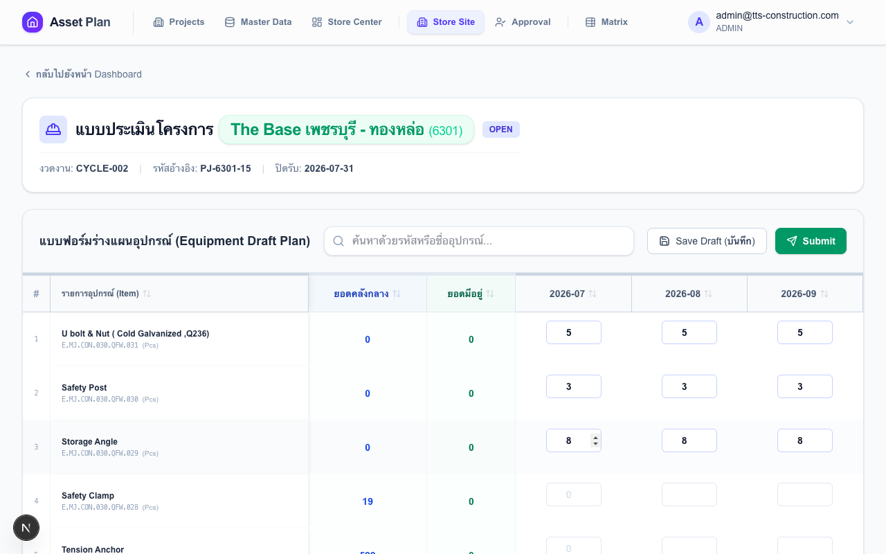
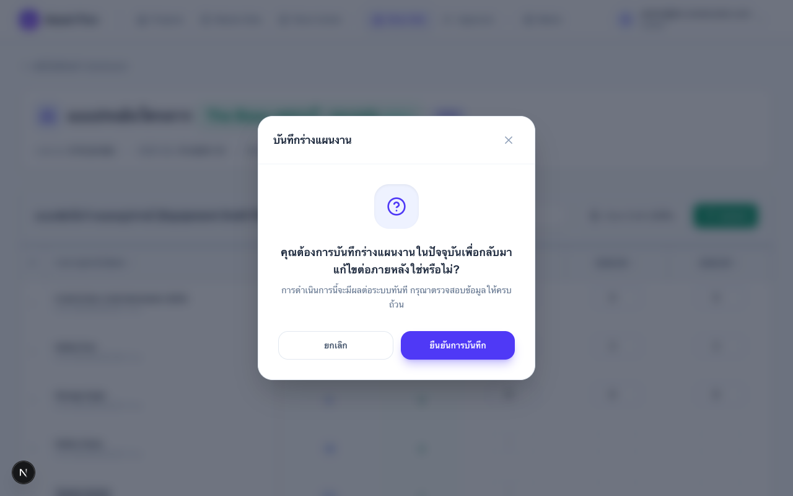

คู่มือเจ้าหน้าที่พัสดุไซต์งาน (Store Site)
ขั้นตอนการวางแผนและส่งแผนความต้องการพัสดุรายงวด
สิทธิ์ที่ใช้
STORE_SITE
เส้นทาง
เมนู → Site Plan
ขั้นตอนทั้งหมด
5 ขั้นตอน
ทำซ้ำ
ทุกรอบแผน
1
เข้าสู่หน้าใบงาน และเลือกโครงการ
หลัง Login ไปที่เมนู Site Plan ระบบจะแสดงใบงานของทุกโครงการที่คุณมีสิทธิ์
กรองตามโครงการ: กดปุ่มชื่อโครงการด้านบน หรือ "โครงการทั้งหมด" เพื่อดูทุกโครงการ
อ่านสถานะใบงาน:
| Badge | ความหมาย | ทำอะไรได้ |
|---|---|---|
| OPEN | รอบแผนเปิดอยู่ | กรอกและส่งแผนได้ |
| SUBMITTED | ส่งแผนให้ PM แล้ว | รอผล — แก้ไขไม่ได้ |
| APPROVED | PM อนุมัติแล้ว | ดูข้อมูลได้เท่านั้น |
| CLOSED | ปิดรอบแล้ว | ดูประวัติเท่านั้น |
สัญลักษณ์นับถอยหลัง:
| สัญลักษณ์ | ความหมาย |
|---|---|
| เกินกำหนด X วัน | เลยกำหนดส่งแล้ว — ติดต่อ Store Center ขอ Unlock |
| ปิดรับวันนี้! ⚡ | วันสุดท้าย — รีบส่งแผนทันที |
| เหลือ 1–3 วัน | ใกล้ครบกำหนด |
| เหลือ X วัน | ยังมีเวลา |
🔒 ใบงานถูกล็อก หากเห็นไอคอนกุญแจ แสดงว่าแก้ไขไม่ได้ (Job APPROVED หรือเลยกำหนด) ปุ่มจะเปลี่ยนเป็น "ดูรายละเอียด" เท่านั้น — ต้องให้ Store Center กด Unlock ก่อน

2
เปิดใบงานและทำความเข้าใจตาราง
คลิก "เริ่มวางแผน" ที่ใบงาน OPEN เพื่อเข้าหน้า Worksheet
คอลัมน์ในตาราง:
| คอลัมน์ | ความหมาย |
|---|---|
| รหัส / ชื่อรายการ | รหัสและชื่อครุภัณฑ์ในระบบ |
| ยอดคลังกลาง | สต็อกที่ Store Center มีอยู่ปัจจุบัน (ข้อมูลแบบ Real-time) |
| ยอดมีอยู่ | ของที่ ไซต์นี้ มีอยู่แล้ว ณ ต้นรอบ |
| เดือน 1, 2, 3 ... | ช่องกรอกจำนวนที่ต้องการในแต่ละเดือน |
💡 ตัวเลขจาง ๆ ในช่องเดือนแรก คือจำนวนที่กรอกในรอบแผนที่แล้ว — ใช้เป็น reference เท่านั้น ไม่ใช่ค่าที่บันทึกไว้แล้ว

3
กรอกจำนวนที่ต้องการในแต่ละเดือน
กรอกจำนวนครุภัณฑ์ที่ต้องการใช้ ในแต่ละเดือน ไม่ต้องกรอกทุกรายการ — กรอกเฉพาะที่ต้องการ
- ค้นหาครุภัณฑ์ที่ต้องการจากช่องค้นหา หรือเลื่อนหาในตาราง
- คลิกที่ช่อง เดือนแรก ของแถวนั้น → พิมพ์ตัวเลข
- กด Enter → ระบบ copy ค่าไปเดือนถัดไปอัตโนมัติ และเลื่อนไปแถวถัดไป
- แก้ไขค่าแต่ละเดือนได้อิสระโดยคลิกเลือกช่องนั้นโดยตรง
แป้นพิมพ์และการนำทาง:
| Key / Action | พฤติกรรม |
|---|---|
| Enter | Copy ค่าปัจจุบันไปยังเดือนที่ว่างทั้งหมดในแถว → เลื่อน cursor ไปแถวถัดไป (ช่องเดือนแรก) |
| Enter บนช่องว่าง | ถ้าช่องเดือนแรกว่างอยู่ — ดึงยอดรอบแผนที่แล้วมาเติมทุกเดือนอัตโนมัติ (ดูจาก placeholder จาง ๆ) |
| Tab / คลิกออก | Trigger auto-fill เดือนที่เหลือในแถวเดิม (ไม่ข้ามแถว) |
| คลิก Header คอลัมน์ | Sort — ชื่อรายการ: A→Z→ปิด | คอลัมน์ตัวเลข: มาก→น้อย→ปิด | คลิกซ้ำเพื่อเปลี่ยน |
| ช่อง ค้นหา | กรองแถวแบบ Real-time ตามรหัสหรือชื่อครุภัณฑ์ |
สัญลักษณ์ที่ต้องรู้:
- ตัวเลขจาง ๆ ในช่องเดือนแรก — ยอดที่กรอกไว้ในรอบแผนที่แล้ว ใช้เป็น hint เท่านั้น กด Enter บนช่องว่างเพื่อนำมาใช้
- คืน X — Badge ใต้ช่องเดือน หมายถึงเดือนนั้นจะมีการคืนของ (จำนวนน้อยกว่าเดือนก่อน)
- จำนวน สูงกว่า "ยอดมีอยู่" → ระบบคำนวณว่าต้องการเพิ่มเติมจากคลังกลาง
- จำนวน ต่ำกว่า "ยอดมีอยู่" → ระบบคำนวณว่าจะมีการส่งคืน

💡 วิธีเร็วที่สุด: ค้นหาครุภัณฑ์ → คลิกช่องเดือนแรก → พิมพ์ตัวเลข → กด Enter ซ้ำไปเรื่อย ๆ ระบบจะ fill เดือนที่เหลือและเลื่อนแถวให้อัตโนมัติ
4
บันทึกหรือส่งแผน
มี 2 ตัวเลือก:
| ปุ่ม | สถานะที่เปลี่ยน | ผลที่เกิดขึ้น |
|---|---|---|
| "บันทึกฉบับร่าง" | ยังคง OPEN | บันทึกโดยไม่ส่ง — กลับมาแก้ไขได้ภายหลัง |
| "ส่งแผน" | OPEN → SUBMITTED | บันทึก + ส่งให้ PM ตรวจสอบทันที |


⚠️ หลังกด "ส่งแผน" ตารางจะ ถูกล็อกทันที — แก้ไขไม่ได้จนกว่า PM จะตีกลับ หรือ Store Center จะ Unlock
5
ติดตามสถานะหลังส่งแผน
กลับมาดูหน้า Site Plan เพื่อติดตามผล:
| สถานะ | ความหมาย | สิ่งที่ต้องทำ |
|---|---|---|
| SUBMITTED | PM กำลังตรวจสอบ | รอผล — ไม่ต้องทำอะไร |
| OPEN (หลัง Submit) | PM ตีกลับ มีเหตุผลใหม่ | อ่านเหตุผลที่ PM ส่งมา → แก้ไข → ส่งใหม่ |
| APPROVED | PM อนุมัติแล้ว ส่งให้คลังกลาง | ไม่ต้องทำอะไร งานส่งต่อให้ Store Center แล้ว |
📌 ต้องการแก้ไขหลัง Submit? ติดต่อ PM ขอให้ตีกลับ หรือติดต่อ Store Center ขอ Unlock — จะได้แก้ไขและส่งใหม่ได้